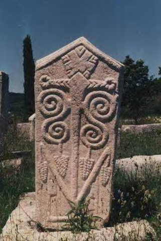

Didodrag Gojak

A se leži Didodrag Gojak, na svojini, na plemenitoj u Zahumlju.
Zašto me mati rodi?
Jer, ovdi ima višlje lažnog sunčevog zlata no snova, višlje vjetra no dobrih riječi, višlje
praznine no ljubavi, višlje
laži no istine, višlje uzimanja no davanja.
Jer, dani ovdi nisu ispunjeni vrimenom vetć morom, notći nisu zdjele pune slatkih sanja vetć
burad puna gortčine.
Zašto me mati ti rodi?
Da budnem žedan, da budnem gladan, umoran, tujžan,....i da me ti vode napojiš, sirom i hljebom
nahraniš, čistom
posteljom odmoriš, osmijehom razveseliš.
O mati, sve bi to bilo isto, a potpuno drugatčije, da to hotće da uradi Kosara. Al` ona to
netće. Hotće, al` drugomu. A
ja hotću samo nju.
I zbog toga zgiboh. Al`, mati, nije to bilo zalud. Jer, kad ona budne i stara i ružna i zla, i
kad se za njom, mati,
nitko ne budne okretao, a onaj njen Juroje je iz kutće istjera, i kad ne budne imala ni gdje ni
kud, tad će se mene
mlada sjetiti, mene i moje ljubavi.
Al` ja tad, mati, iz neba nejću doć. Ozgo tću sve to samo glidati.
Zbog tog zmreh majko mlad. Al` zbog toga budutćeg trena, vridlo me i rodit.
Ti putniče, koji moju patnju sada znaš, ne privali mi biljega, a privališ li ga Bog ti jos terži
na tvoje tijelo stavio.
1167 godne, kad bjehu pune vlkova šume.
Here lies Didodrag Gojak, on his land, a noble one in Zahumlje.
Why did you, mother give birth to me?
Because there is more false sunshine gold here than dreams, more wind than pleasant words, more
emptiness then love,
more lies than truth, more taking than giving.
Because days here are not filled with time but with nightmares and nights are not bowls filled
with sweet dreams but
barrels full of bitterness.
Why did you, mother give birth to me?
To be thirsty, to be hungry, tired, sad….and that you give me water, to feed me with cheese and
bread, to rest me in a clean
bed, and to cheer me with a smile.
Oh mother, all that would be the same, but completely different, if Kosara wanted to do that.
But she doesn't. She
wants but for someone else. And I, I want only her.
And for that, I died. But, mother, that was not in vain. For when she gets old and ugly and
evil, and when nobody,
mother turns to look at her anymore, and when her Juroje ousts her from the house, and when she
has nowhere to go, then
she will remember me young, me and my love.
But then mother, I will not come from the skies. I will just look at that from above.
For that mother, I died young. But for that future moment, it was worthed to be born.
You traveler, who know my sufferings now, do not tumble my stone, and if you do, may God put
an even heavier one onto your
body.
The year 1167, when forests were full of wolves.
Home